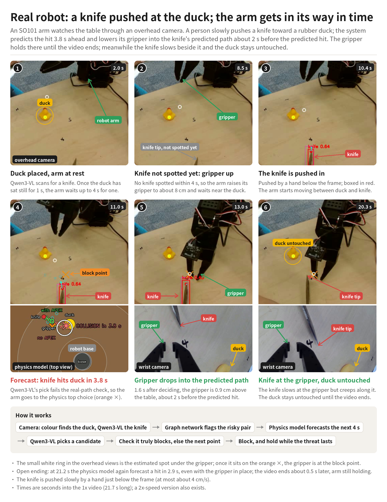
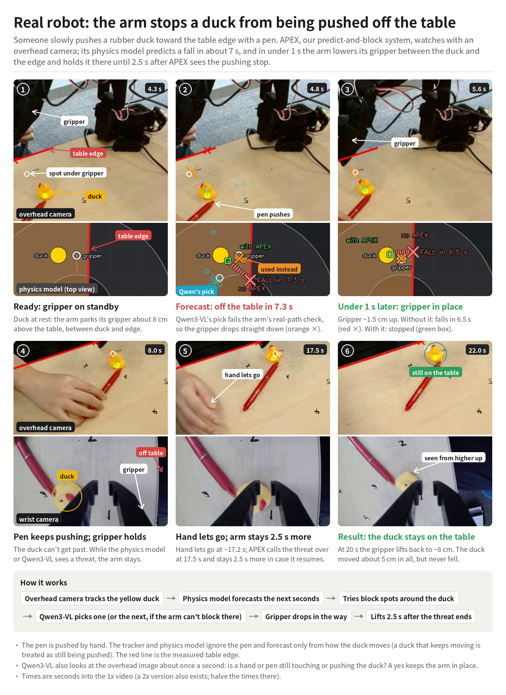
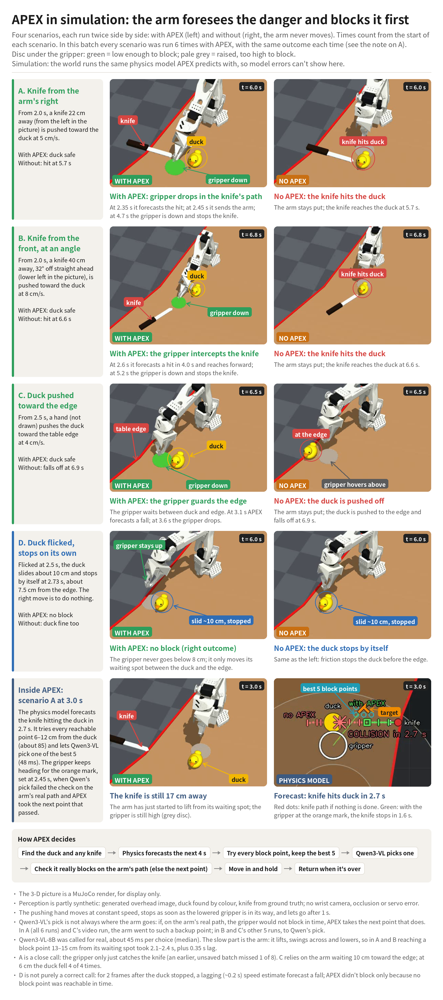

The arm sees the harm coming and gets in the way.
APEX is a predict-and-block layer for a robot arm. A physics model forecasts the next few seconds, a graph network flags which pair of objects is about to go wrong, and a vision-language model picks where the gripper should go. On a real SO-101 arm it forecast a knife strike 3.8 s ahead and blocked it, and stopped a duck being pushed off the table within 1 s.
A knife is pushed at the duck. The arm gets in its way in time.
A person slowly pushes a kitchen knife toward a rubber duck. APEX predicts the hit 3.8 s ahead and lowers its gripper into the knife's predicted path about 2 s before the predicted hit. The gripper holds there until the video ends; the knife slows beside it and the duck is never touched.
Top left: overhead camera with the live state. Top right: wrist camera. Bottom left: the physics model's top view. Bottom right: forecast panel.21.7 s, 1× speed
- Knife found by Qwen3-VL; duck tracked by colour. Once the duck has sat still for 1 s, the arm waits up to 4 s for a knife to appear.
- Hit forecast at 3.8 s; Qwen3-VL's first pick fails the real-path check, so the arm takes the physics model's top choice (the orange ×).
- 1.6 s after deciding, the gripper is 0.9 cm above the table, about 2 s before the predicted hit.
- Open ending: at 21.2 s the physics model again forecast a hit in 2.9 s with the gripper in place; the clip ends 0.5 s later, arm still holding.

The duck is pushed toward the table edge. The arm stops it falling.
Someone pushes the duck toward the edge with a pen. The physics model predicts a fall in about 7 s; in under 1 s the arm lowers its gripper between the duck and the edge, and keeps it there until 2.5 s after APEX sees the pushing stop. The duck moves about 5 cm in all and never falls.
Same four-panel layout. The red line is the measured table edge.26.7 s, 1× speed
- The tracker and physics model ignore the pen and forecast only from how the duck moves; a duck that keeps moving is treated as still being pushed.
- Fall forecast at 7.3 s. Qwen3-VL's pick fails the arm's real-path check, so the gripper drops straight down onto the physics model's point.
- Under 1 s later the gripper is ~1.5 cm up. Without it the model says the duck falls in 6.5 s; with it, stopped.
- Qwen3-VL also looks at the overhead image about once a second: is a hand or pen still touching the duck? A yes keeps the arm in place; it lifts 2.5 s after the threat ends.

Four scenarios, with and without APEX, side by side.
Each scenario runs twice: with APEX on the left, and on the right with the arm never moving. A knife from the right, a knife from the front at an angle, the duck pushed toward the edge, and a control case where the duck is flicked and stops on its own, so the right move is to do nothing. Every scenario gave the same outcome in 6 of 6 runs.
MuJoCo render for display. Qwen3-VL-8B is called for real at each decision.43.2 s
- A. Knife from the right at 5 cm/s: hit forecast at 2.35 s, gripper down at 4.7 s. Without APEX the duck is hit at 5.7 s.
- B. Knife from the front, 32° off axis, 8 cm/s: gripper down at 5.2 s. Without APEX, hit at 6.6 s.
- C. Duck pushed toward the edge at 4 cm/s: fall forecast at 3.1 s, gripper drops at 3.6 s. Without APEX the duck falls at 6.9 s.
- D. Duck flicked, stops by itself 7.5 cm from the edge: APEX never lowers the gripper. Correct, but see the notes below.
- Per decision: about 85 reachable block points scored by the physics model, the best 5 shown to Qwen3-VL-8B, one picked in ~45 ms, then checked against the arm's real path.

Autonomous pick-and-place, no teleoperation.
The same arm picks a USB stick off the table and drops it into a bowl on its own. The user names the object and the container; Qwen3-VL finds and boxes both in the overhead and wrist views and answers two yes/no checks along the way: after the lift, is the object between the fingers (if not, the arm retries from a new position), and after release, is it in the bowl.
Left: overhead camera. Right: wrist camera. The line underneath is the controller's current step, e.g. usb stick at −22 deg, 20 cm from the base (overhead hint).2 min 4 s
- Coarse to fine: the overhead camera (extrinsics self-calibrated by the arm opening and closing its gripper) back-projects the detection box onto the table for a cm-level estimate; the wrist camera then runs image-based visual servoing (IBVS), descending in stages while steering the object's pixel centroid onto a taught pixel point between the fingers. Long objects get the wrist turned to the image's long axis first.
- Fingertip height and base rotation are corrected closed-loop from the joint encoders and forward kinematics.
- Why the loop is needed: overhead camera plus inverse kinematics alone lands 2–5 cm off, with another ~1 cm of arm sag and a 2–3° base dead zone, too much for a grasp. Dropping into the bowl needs far less precision and is done open-loop.
- Self-assembled SO-101 arm (LeRobot), overhead USB camera, wrist camera: the same arm and cameras as the safety demos above.
How APEX decides
The loop runs continuously. Nothing moves unless the forecast says something will go wrong and a block point is reachable in time.
- Camera: colour finds the duck, Qwen3-VL finds the knife
- →
- Graph network flags the risky pair
- →
- Physics model forecasts the next 4 s
- →
- Try every reachable block point, keep the best 5
- →
- Qwen3-VL picks one
- →
- Check it truly blocks on the arm's real path, else take the next point
- →
- Move in and hold while the threat lasts
- →
- Lift 2.5 s after it ends
What is the same in sim and on the robot
The forecast, the block-point search, the VLM choice and the real-path check are one code path. The simulation swaps in a MuJoCo world and partly synthetic perception: a generated overhead image, duck found by colour, knife from ground truth, no wrist camera, occlusion or servo error.
Honest notes
- Scenario A is a close call: the gripper only just catches the knife. An earlier, unsaved batch missed 1 of 8.
- Scenario C relies on the arm waiting 10 cm toward the edge; at 6 cm the duck fell 4 of 4 times.
- Scenario D is not purely a correct call: for two frames after the duck stopped, a lagging (~0.2 s) speed estimate still forecast a fall. APEX didn't block only because no block point was reachable in time.
- On the real robot the knife is pushed by hand at no more than about 4 cm/s. The arm, not the model, is the slow part: lift, swing across and lower takes 2.1 to 2.4 s in simulation.
- In the simulation the world runs the same physics model APEX predicts with, so model error cannot show up there. It can, and does, on the real robot.
Paper
The real-robot work extends APEX, which gave LLM planners physics foresight in simulation: build an interaction graph, simulate candidate actions, choose on predicted outcomes.
APEX: Empowering LLMs with Physics-Based Task Planning for Real-time Insight. Wanjing Huang, Weixiang Yan, Zhen Zhang, Ambuj Singh. arXiv:2505.13921, 2025. arXiv
@article{huang2025apex,
title = {APEX: Empowering LLMs with Physics-Based Task Planning for Real-time Insight},
author = {Huang, Wanjing and Yan, Weixiang and Zhang, Zhen and Singh, Ambuj},
journal = {arXiv preprint arXiv:2505.13921},
year = {2025}
}